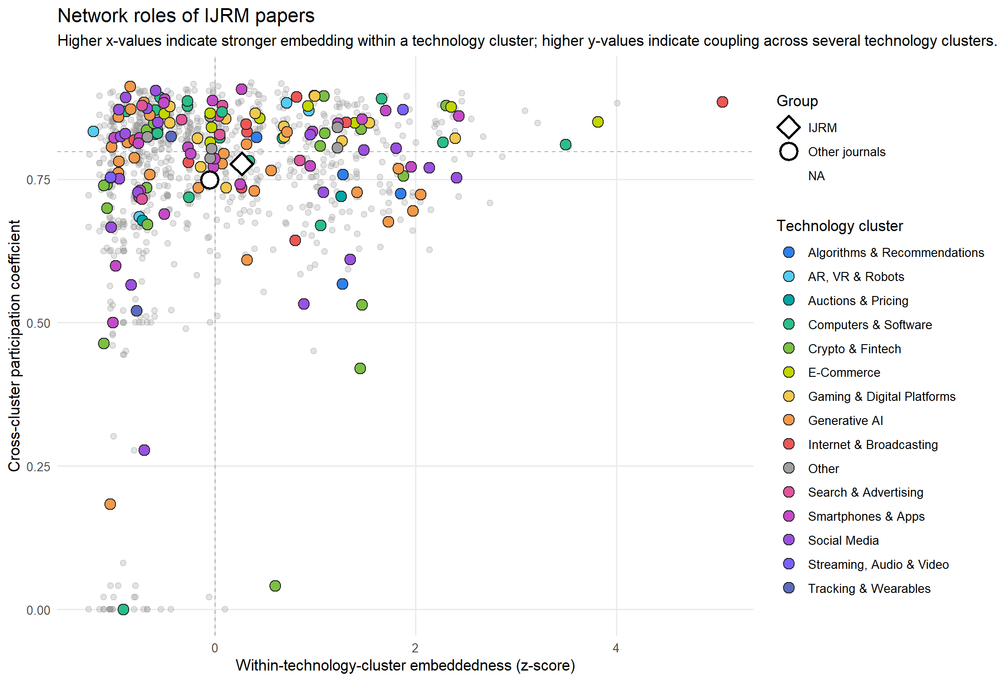
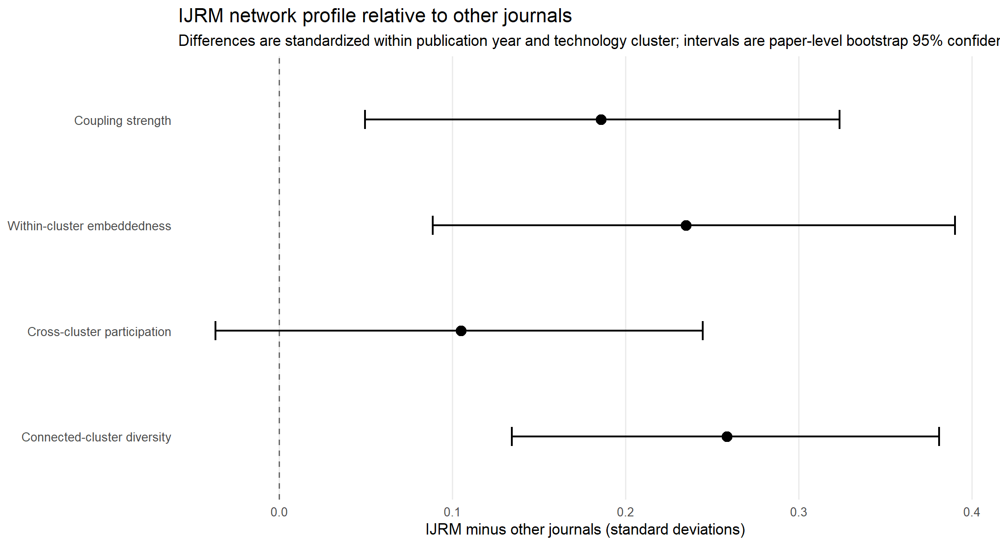

Appendix G — Bibliometric Network Analyses
Alongside the semantic clustering reported in the main text, we conducted a set of complementary bibliometric network analyses on the same academic corpus, using the bibliometrix R package [1]. Where the semantic clusters group articles by the consumer-facing technology they examine, these networks group articles and their references by citation behavior — who cites whom directly, which articles draw on similar prior literature, and which references are cited together — offering a complementary, content-independent view of how the field is structured. Each figure is available as an interactive HTML version online; the static image shows the same network in other output formats.
1 Direct Citation Networks
bibliometrix::histNetwork() [1] reconstructs the direct-citation structure among the retained articles themselves — that is, which sampled articles cite one another within the corpus, arranged chronologically by publication year. This differs from the co-citation and coupling networks below, which characterize articles through their external references rather than through citation links within the sample. We report two versions of this direct-citation network, grouping articles by row using the same underlying citation links but a different grouping variable.
1.1 By Technology Cluster
Figure 1 arranges articles by the technology cluster used throughout the main text, with each dot colored by that cluster. Reading down the rows shows which technology clusters accumulate more within-corpus citation activity and when; the connecting lines trace which specific articles cite which.
1.2 By Journal
Figure 2 uses the identical citation links, but arranges articles by publishing journal instead. Solid connecting lines indicate a citation between two articles in the same journal; dashed lines indicate a citation across journals, making it possible to see at a glance whether a journal’s articles mostly cite each other or draw more broadly across the seven journals covered by the corpus.
2 Bibliographic Coupling
Bibliographic coupling connects two articles when they cite at least one of the same references, using bibliometrix::biblioNetwork(analysis = "coupling") [1]. Unlike the direct-citation networks above, coupling does not require the two articles to cite each other, or even to be published in an order that would allow that — it identifies articles that draw on a similar intellectual base regardless of when either was published. bibliometrix::networkPlot() additionally applies Louvain community detection [1] to identify clusters of articles with especially dense coupling among themselves; these communities characterize shared reference bases and need not align with the technology clusters used for node coloring.
Figure 3 shows the resulting network for the full corpus, node color again indicating technology cluster.
2.1 International Journal of Research in Marketing in the Coupling Network
To illustrate how a single journal is positioned within this coupling structure, Figure 4, Figure 5, and Figure 6 examine International Journal of Research in Marketing (IJRM) articles specifically, reusing the exact graph, layout, and selected articles from Figure 3.
Figure 4 highlights IJRM’s articles within the full coupling network, coloring them by technology cluster while greying out articles from other journals.
Figure 5 summarizes each article’s structural role within the coupling network using two standard network measures: within-cluster embeddedness (how strongly an article couples with others in its own bibliometric community) on the x-axis, and a cross-cluster participation coefficient (how broadly its coupling relationships spread across different communities) on the y-axis. Articles high on the y-axis couple broadly across communities rather than concentrating within one, regardless of technology cluster.

Figure 6 reports, for a set of network centrality measures, the standardized difference between IJRM and the other six journals (IJRM minus other journals, in standard deviations, computed within publication year and technology cluster), together with paper-level bootstrap 95% confidence intervals. Intervals that do not cross zero indicate a measure on which IJRM’s articles are reliably more or less central than comparable articles elsewhere in the corpus.

3 Co-citation Networks
Co-citation networks connect references — not corpus articles — that are cited together by the same corpus article, using bibliometrix::biblioNetwork(analysis = "co-citation") [1]. Where bibliographic coupling characterizes corpus articles by what they draw on, co-citation characterizes the underlying literature itself: references that are frequently cited alongside one another are treated as sharing an intellectual foundation, regardless of which article cites them. Node layout again comes from bibliometrix::networkPlot() with Louvain community detection.
3.1 Dominant Technology Cluster per Reference
Figure 7 colors each reference by its dominant technology cluster: among the corpus articles that cite a given reference, the technology cluster contributing the largest share of citing articles, provided that share reaches at least 20%. References with no cluster reaching that threshold — i.e., cited about as often by articles across several technology clusters as by any one of them — are shown in grey (“No dominant cluster”). This identifies references that function as a shared foundation for one technology cluster in particular, as distinct from references drawn on broadly across the field.
3.2 Small Multiples by Technology Cluster
Figure 8 repeats the same co-citation network once per technology cluster, using identical reference positions in every panel, and highlights (in that cluster’s color) the references cited by at least one article assigned to that cluster. Unlike Figure 7, a reference can be highlighted in more than one panel if it is cited by articles from more than one technology cluster, making this view better suited to comparing which regions of the shared reference landscape each technology cluster draws on, rather than to identifying references specific to a single cluster.